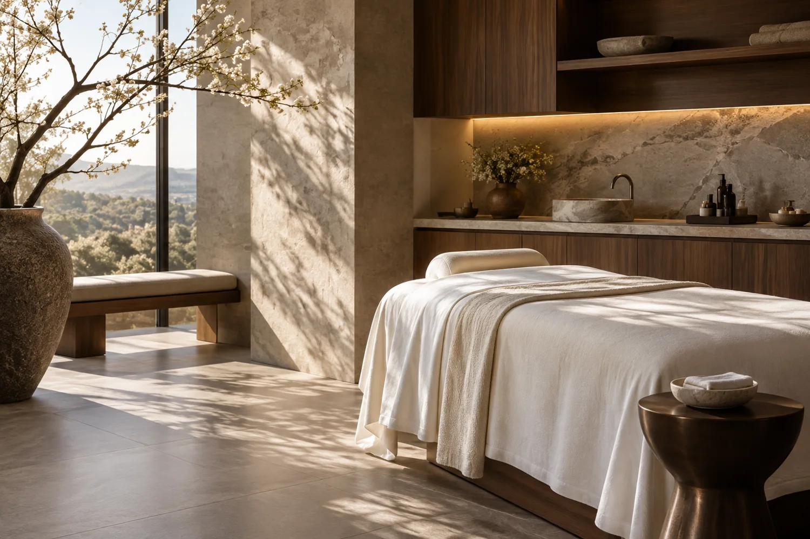
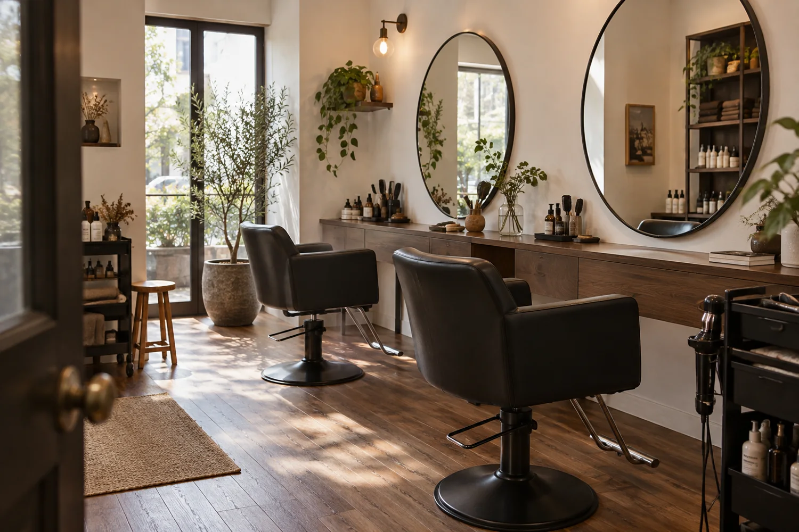

メニューの範囲
施術と相談のどちらが含まれるか、詳細画面で確認します。
A PLACE THAT FEELS LIKE YOU.
静かな個室。短い時間。髪の相談。
大切にしたい条件から、探してみませんか。
3店舗の架空データで操作を体験できます。

PLACES TO DISCOVER

BEFORE YOUR FIRST VISIT
雰囲気だけで決める前に、メニュー、所要時間、個室の有無を確認。気になる店舗を保存して、あとから見直せる設計です。
保存したサロンを見る ↗施術と相談のどちらが含まれるか、詳細画面で確認します。
所要時間や個室の有無を、予定に合わせて比べます。
本番では正式な料金とキャンセル規定を確認して予約先へ進みます。
FOR SALON OWNERS
写真と紹介文、検索条件を一つに。掲載資料のサンプルをご覧いただけます。
掲載資料を見る ↗